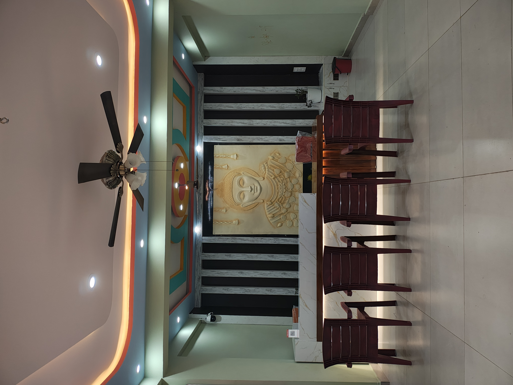

10th class batch 2024-25 Farewell and Pooja
Here is the new way of
studying
Schoolreport
Oxford main Lobby

Good evening to all...I am very proud to announce my school report of progress since 1985. Sri Sarada vidya Mandir EM&TM Primary School, the first of its kind private english medium school was established in 1985 by sri late D.v Rama Subramanyam garu in this village Mulakalacheruvu.
It was established with merely 33 no of students .out of 33, 31 numbers are 1st class and 2 numbers are 2nd class. After 19 years ,in 2004, this school was promoted to higher Education up to 10th class.In that year,only 6 members of 10th class were appeared SSC public exams in april-2005.
After introducing grading system in public examinations, Our beloved student" K.haritha D/O K.Viswanath(DasettivariPalle)" got 9.8 points out of 10 points.That is mandal 1st in this academic year 2011-12. in 2016 -17 10th class batch ,our beloved student K.Dheeraj kumar has received Pratibha Awardy vijayawada, Mr. K. Dheerj Kumar now is studying MBBS in "All India Institute of Medical Sciences(AIIMS)" Delhi.
In 2017-18 ,Sri .Y.Sanath Kumar has undertaken the of the list 160 students. In the same year,10th class batch 9 members